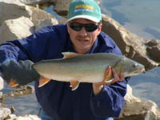

|
 Center for the Defense of Free Enterprise
No more phony endangered species
obstructions |
|
HOME ISSUES OPPOSITION PROJECTS DEFENDERS WISE USE BOOKSTORE ARCHIVE |
Pacific Legal Foundation wins landmark
lawsuit
for property owners
BOISE, ID; April 25, 2005: In an important victory for western property owners, the United States Ninth Circuit Court of Appeals has ruled for Pacific Legal Foundation, and Idaho rancher Verl Jones family, in a closely watched case that addresses the standard by which injunctions can be issued under the Endangered Species Act. The Ninth Circuits ruling clarifies for the first time that environmental plaintiffs must present actual evidence that a species is likely to be harmed before an injunction can be issued against a property owner, and that a lack of evidence of past harm is indicative of the likelihood of future harm.
For years, environmental plaintiffs have been able to get injunctions ordering private property owners to cease legal activity on their land on the basis of mere allegations alone. PLF has long argued, as it did in the Joneses case, that there must be an evidentiary showing of real harm to a species before a court can issue an injunction that would result in serious economic harm to the property owner. The Ninth Circuit Court of Appeals agreed.
"The court said environmentalists have to prove their case, not just allege it," said Russ Brooks, managing attorney for Pacific Legal Foundations Pacific Northwest Center. "The courts decision means that environmental activists can no longer use the Endangered Species Act as a weapon against property owners without a shred of evidence that any species is actually being harmed."
"For too long, environmentalists have been able to easily obtain injunctions against property owners on the basis that courts should give the benefit of the doubt to the species. The Ninth Circuit has just put environmentalists on notice that now they are going to have to give courts legitimate evidence of a likelihood of harm they cant get away with destroying peoples lives on baseless allegations anymore," Brooks said.
The Jones family operates a small ranch near Challis, Idaho. Since 1961, they have diverted water from nearby Otter Creek in the summer months to irrigate their alfalfa pastures for livestock.
An antigrazing, environmental activist group, the Idaho Watersheds Project, sued Verl Jones and his family in 2001, claiming the family was violating the ESA by diverting water from Otter Creek and killing bull trout protected under the Act. The group presented no evidence that bull trout were being harmed to support their claim.
PLF says the environmental groups real aim was to shut off the Joneses water use to force the family into bankruptcy and off their land. PLF presented evidence to the court, including testimony by the Jones family and a longtime ranch hand, that no one has ever seen a bull trout injured in Otter Creek, let alone killed, in the 40 years the family has operated their irrigation diversion.
Nevertheless, the federal District Court granted the environmentalists request for summary judgment and issued the injunction, ordering Jones to stop diverting water to the family ranch. As a result, the Jones family has been forced to buy about 100 tons of hay per year to make up for the loss of irrigation water for the past three years.
The Ninth Circuit overturned the District Courts decision, and ruled that courts cannot defer to environmentalists mere assertion of harm to a species. The court reversed and remanded the case to the lower court for trial to consider the evidence and lack of evidence presented. The unpublished decision is significant because it is the first time the Ninth Circuit has clarified the type of evidence that must be demonstrated in order for an environmental plaintiff to obtain an injunction under the ESA.
"The Ninth Circuit said that if the evidence shows a bull trout has not been harmed in 40 years, it isnt likely to be harmed in the next 40 years certainly not likely enough to support an injunction shutting of the Joneses water," PLFs Brooks said.
As Brooks explained, the Joneses case has been widely watched by Idaho property owners who have for years been terrorized by environmental activist groups that have used the ESA as a means to shut down land use activity they oppose.
"For the Jones family, like other citizens in Idaho and across the west, the Endangered Species Act has brought nothing but despair, hardship, and lawsuits. Instead of restoring fish, the ESA has been used by environmental groups to hurt people who work the land for a living," said Brooks.
"This decision should give a lot of property owners hope where they have felt powerless against environmentalists frivolous lawsuits for years," added Brooks. "Its been a long time coming, but the tide is turning and its turning for the rights of property owners and reasonableness in environmental laws."
About Pacific Legal Foundation
Founded in 1973, Pacific Legal Foundation is a national leader in the effort to reform the Endangered Species Act and raise awareness of the Acts impact on people. PLFs Pacific Northwest Center is located in Bellevue, Washington. More information on the Foundation can be found at
www.pacificlegal.org Pacific Legal can be reached at (425) 576-0484.RETURN TO CENTER FOR THE DEFENSE OF FREE ENTERPRISE HOME PAGE